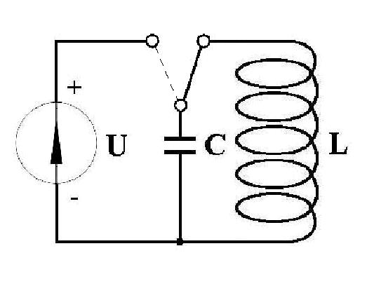
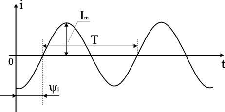
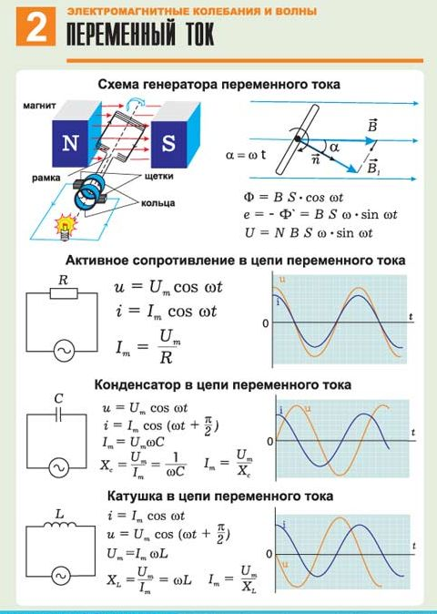
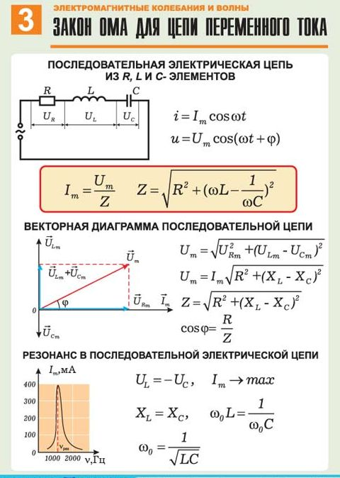

1.1.7. Электромагнитные колебания и волны. Переменный ток
Электромагнитными колебаниями называются периодические изменения напряженности Е и индукции В.
Электромагнитными колебаниями являются:
- радиоволны,
- микроволны,
- инфракрасное излучение,
- видимый свет,
- ультрафиолетовое излучение,
- рентгеновские лучи,
- гамма-лучи.
Распространение электромагнитных колебаний происходит в виде электромагнитных волн, скорость которых в вакууме равна скорости света с, а длина волны l связана с периодом Ти частотой w соотношением: l = cT = 2pс/w. По своей природе электромагнитные колебания представляют собой совокупность фотонов, и только при большом числе фотонов их можно рассматривать как непрерывный процесс.
Различают вынужденные электромагнитные колебания (Э. к.), поддерживаемые внешними источниками, и собственные Э. к., существующие и без них.
Электромагнитные волны. Их существование было теоретически предсказано великим английским физиком Дж. Максвеллом в 1864 году. Максвелл проанализировал все известные к тому времени законы электродинамики и сделал попытку применить их к изменяющимся во времени электрическому и магнитному полям. Он обратил внимание на ассиметрию взаимосвязи между электрическими и магнитными явлениями. Максвелл ввел в физику понятие вихревого электрического поля и предложил новую трактовку закона электромагнитной индукции, открытой Фарадеем в 1831 г.: Всякое изменение магнитного поля порождает в окружающем пространстве вихревое электрическое поле, силовые линии которого замкнуты. Максвелл высказал гипотезу о существовании и обратного процесса: Изменяющееся во времени электрическое поле порождает в окружающем пространстве магнитное поле.
Рисунки 1.7.1 и 1.7.2 иллюстрируют взаимное превращение электрического и магнитного полей.
Рис. 1.7.1. Закон электромагнитной индукции в трактовке Максвелла
Рис. 1.7.2. Гипотеза Максвелла.
Изменяющееся электрическое поле порождает магнитное поле

Колебательный контур — представляет собой электрическую цепь, содержащую соединённые катушку индуктивности (L) и конденсатор (C). В такой цепи могут возбуждаться колебания тока (I) и напряжения (U). Колебательный контур — простейшая система, в которой могут происходить свободные электромагнитные колебания.
Переме́нный ток, AC (англ. alternating current – переменный ток) — электрический ток, который периодически изменяется по модулю и направлению. Под переменным током также подразумевают ток в обычных одно- и трёхфазных сетях. В этом случае мгновенные значения тока и напряжения изменяются по гармоническому закону (рис.1.7.3).

Для сравнения действий постоянного и переменного токов вводят понятие действующее значение переменного тока. Действующее значение переменного тока численно равно такому постоянному току, при котором за время равное одному периоду в проводнике с сопротивлением R выделяется такое же количество тепловой энергии, как и при переменном токе.
Преимущества сетей переменного тока:
- Напряжение в сетях переменного тока легко преобразуется от одного уровня к другому путем применения трансформатора.
- Асинхронные электродвигатели переменного тока проще и надежнее двигателей постоянного тока (90% вырабатываемой электроэнергии потребляется асинхронными электродвигателями).
Для конспекта
 